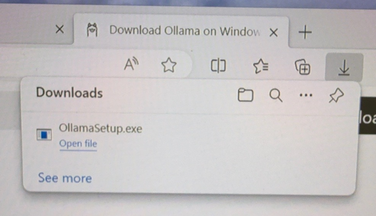
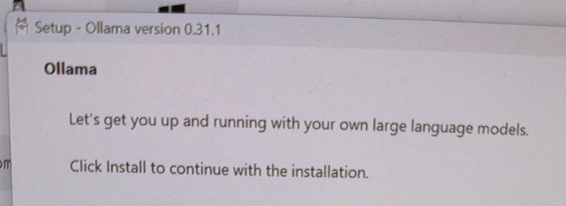
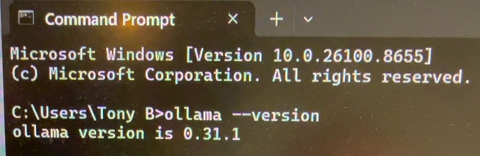
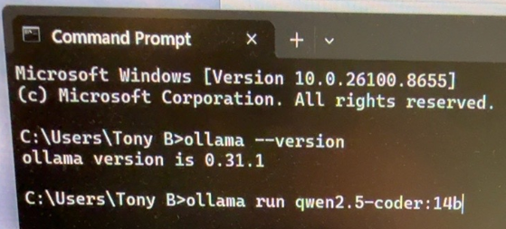
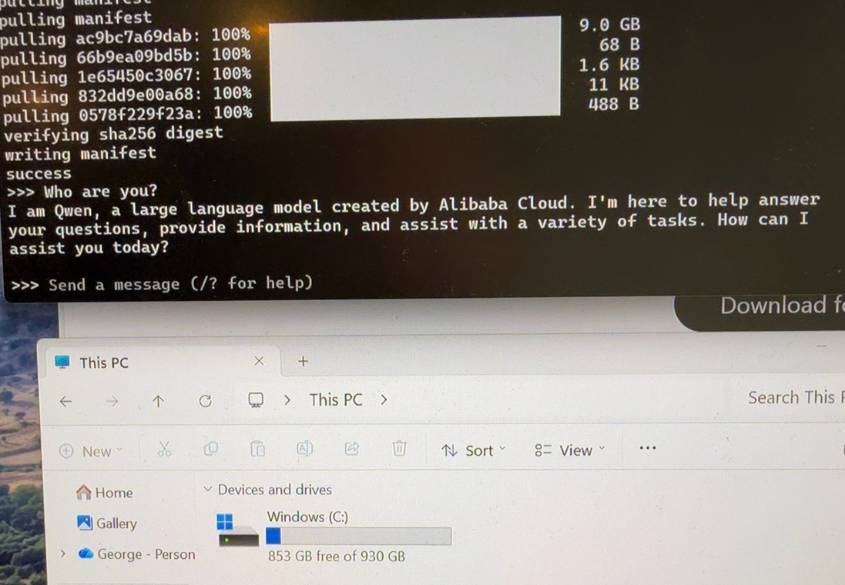
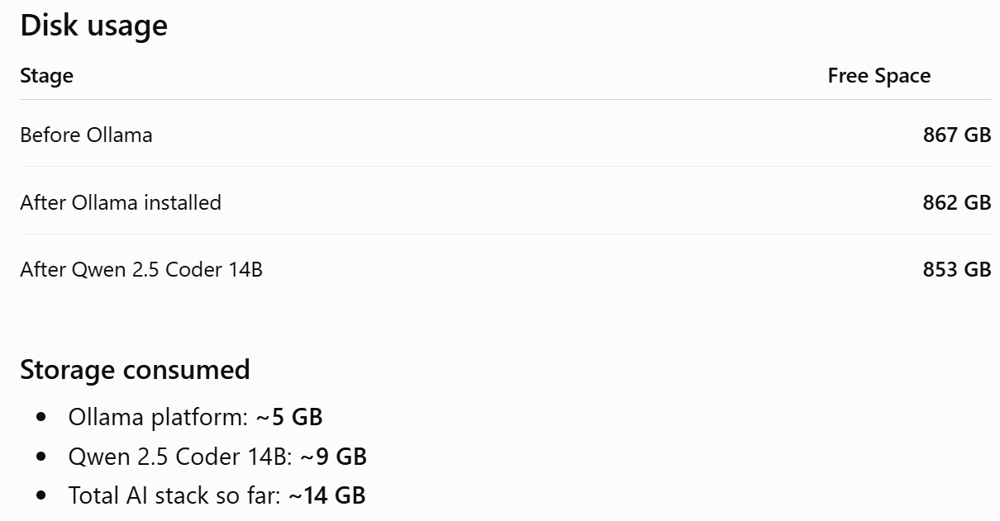

Today, the Beelink SER9 became the first working node of the AI Lab. Here's everything that happened, in order.
| Machine | Beelink SER9 |
|---|---|
| CPU | AMD Ryzen AI 9 HX 370 |
| RAM | 32 GB LPDDR5X |
| GPU | Radeon 890M integrated graphics |
| NPU | ~50 TOPS AI NPU |
| Storage | 1 TB SSD |

The least dramatic part of the whole day — and after everything else that happened, that's a compliment.
ai-lab-b100.80.190.11
"Click Install to continue" — the last easy decision for the next twenty minutes.

The moment you find out the install actually stuck, instead of just looking like it did.

Typed the command, held our breath. First time asking this box to think for itself.

It's alive, and it introduced itself before we even asked. First real proof the whole stack — model, Ollama, hardware — was actually talking to itself, not just installed side by side.
| Before Ollama | 867 GB free / 930 GB total |
|---|---|
| After Ollama | 862 GB free |
| After Qwen2.5-Coder:14B | 853 GB free |
| After Open WebUI + deps | 847 GB free |

14 GB for an entire local AI stack. Cheaper than installing a AAA game.
(A joking Blues Brothers-style moment — not to be taken any more seriously than the movie was.)